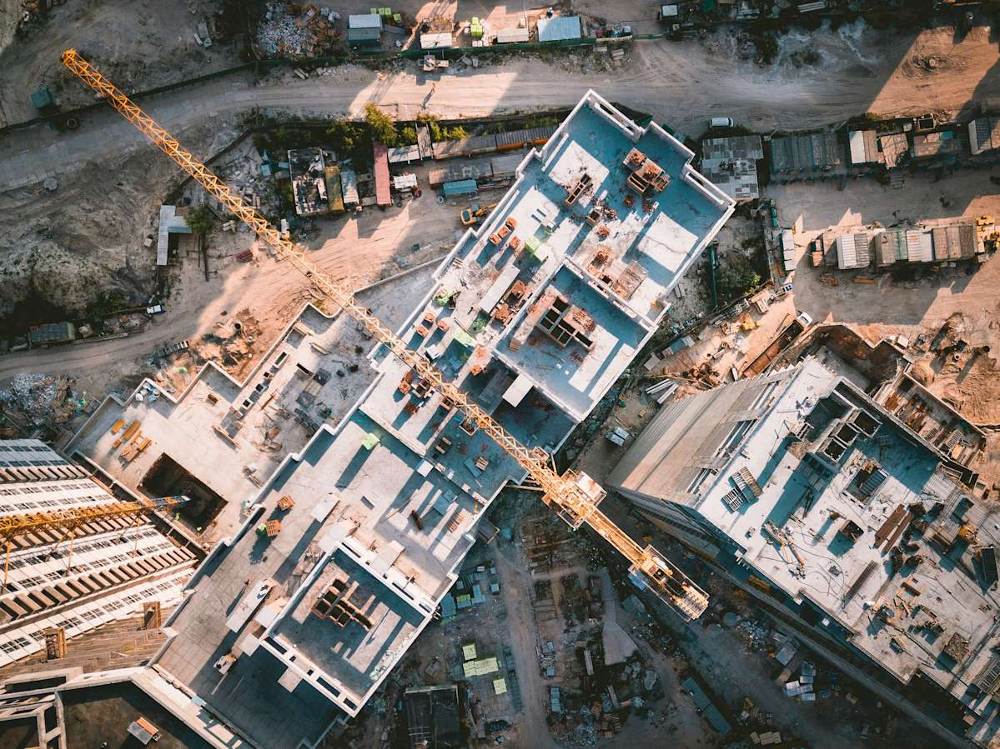
UZMASAT-1 APPLICATIONS
INFRASTRUCTURE MONITORING
Consult Me Your Solutions Get Your Free Trial NowWe accelerate infrastructure development monitoring and decision-making using geospatial analytics and advanced Geospatial Foundation Artificial Intelligence technology. Accessing up-to-date satellite data has often been a challenge in infrastructure monitoring, but with UZMASAT-1 and its constellation of satellite data, it now enables seamless, AI-driven geospatial solutions.
Powered by UZMASAT-1’s comprehensive data, it ensures precise asset verification across extensive terrains, making geospatial analysis more efficient and accessible than ever.

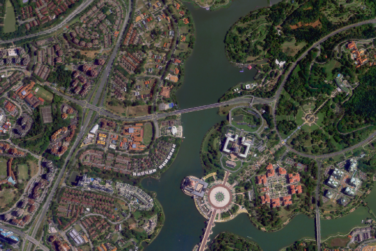
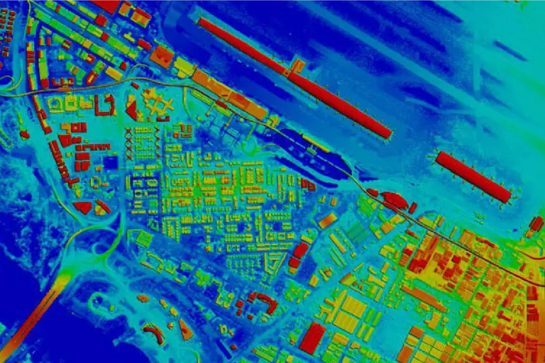
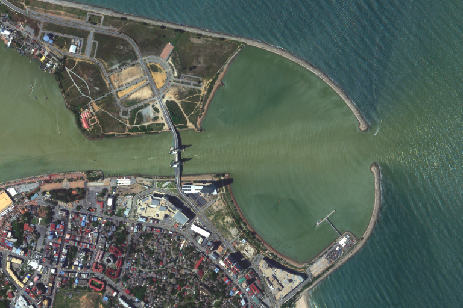
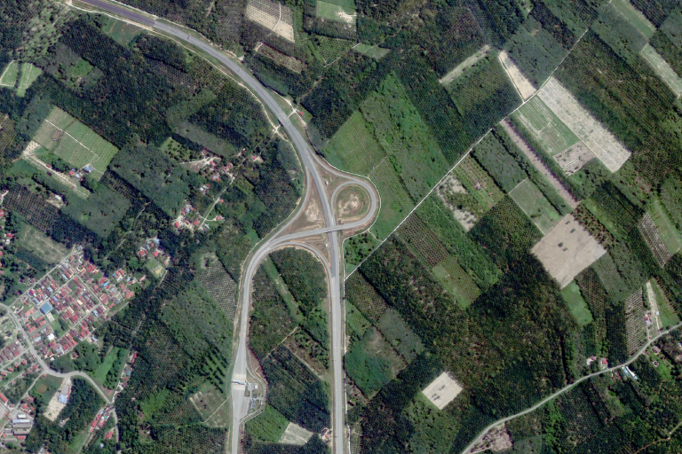
Real-Time Infrastructure Monitoring with Satellite Remote Sensing
Satellite-based remote sensing provides detailed, up-to-date imagery that enables tracking and assessing construction progress, land use, and the condition of existing infrastructure. This allows stakeholders to monitor urban growth, road networks, utilities, and other critical assets with precision and efficiency.
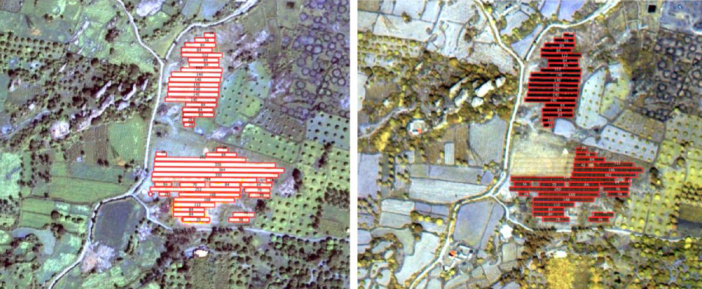
AI-Powered Analysis for Enhanced Decision-Making
Our platform integrates in-house AI capabilities with remote sensing data, automating the detection of development progress, identifying potential risks, and predicting maintenance needs. This rapid processing and analysis provide real-time insights, empowering stakeholders to make proactive, informed decisions.
Optimized Planning for Sustainable Infrastructure
By combining satellite remote sensing and AI, our platform empowers developers and urban planners to optimize construction processes, prioritize resource allocation, ensure safety, and extend the longevity of infrastructure. This data-driven approach supports sustainable, resilient infrastructure development.
Infra .GAI
Transforming Infrastructure Monitoring and Planning with Satellite and AI Technology
Infra.GAI leverages real-time satellite remote sensing and AI-driven analytics to enhance infrastructure development.
By providing precise monitoring, predictive insights, and optimized planning, Infra.GAI enables stakeholders to make data-driven decisions for sustainable, resilient urban growth and resource management.
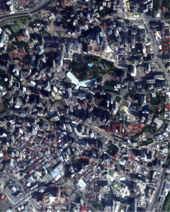
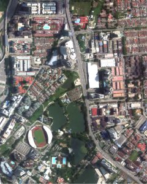
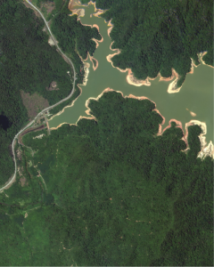
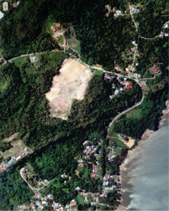
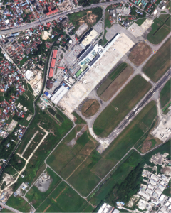